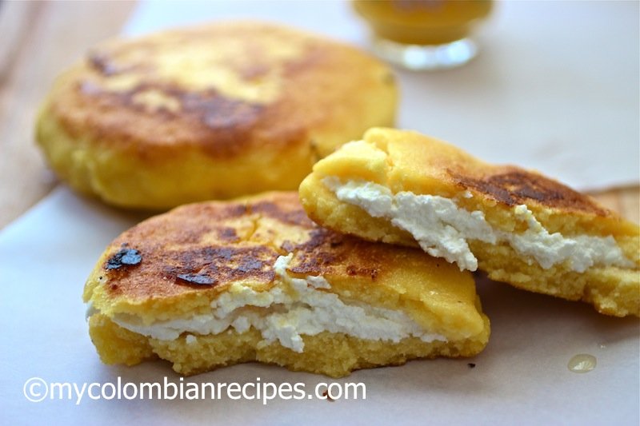

Arepa Boyacense

The arepa is one of the most famous foods around Latam, there is a big mistery about his origin. If you go to Colombia they going to said that they created the arepa, but if you go to Venezuela you're going to heard that they created it. The thing that i know is that in Colombia we cook a variety of arepas. In this page you will find a recipe of an arepa boyacense, originated in the lands of Boyaca.
I hope you enjoy one of my favorite colombian doughs.
Ingredients:
- 2 cups yellow precooked cornmeal masarepa
- 5 tablespoons all purpose flour
- 1 ½ cups hot water
- ½ cup milk
- ¼ teaspoon salt
- 2 tablespoons sugar
- 3 tablespoons soft butter plus more for cooking
- 2 cups of queso fresco Colombian quesito or farmer cheese, crumbled
Instructions:
- In a bowl, combine masarepa, flour, water, milk, salt, sugar, and butter. Knead for 3 minutes, wetting your hands with water as needed.
- Form 12 small dough balls. Place each between plastic bags or parchment paper, and flatten to about ⅛-inch thickness using a flat pot cover.
- Place cheese in the center of half the masa circles and top with another circle of dough. Seal the edges with your fingers to prevent the cheese from spilling out.
- Melt butter in a nonstick pan over medium heat. Cook the arepas for about 3 minutes on each side, until golden brown and a crust forms. Serve immediately.
Return to the main page